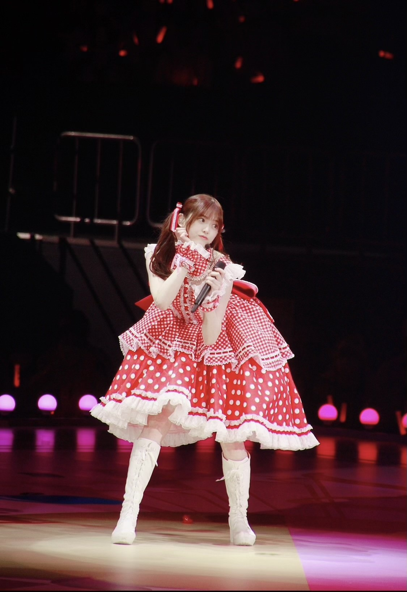
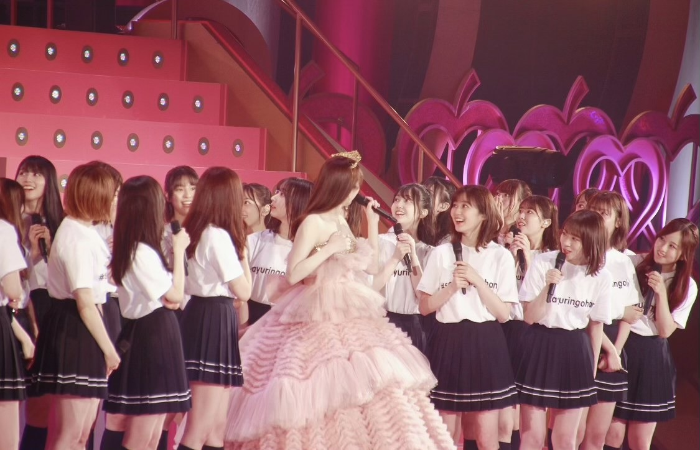
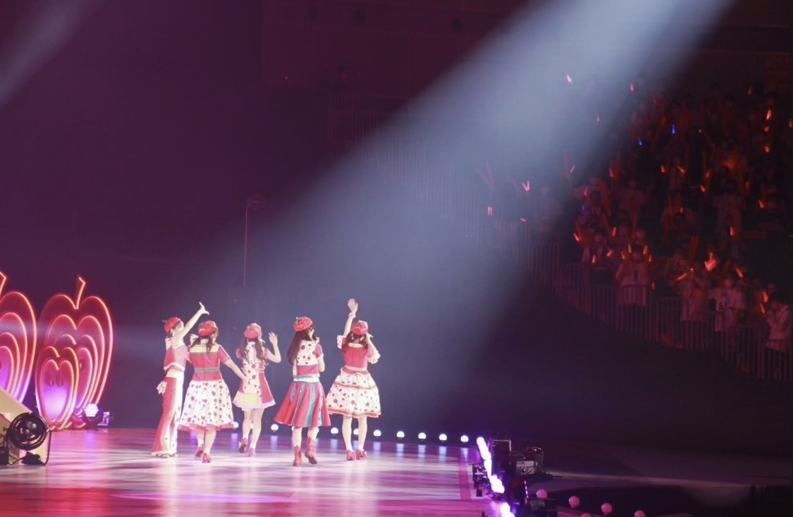
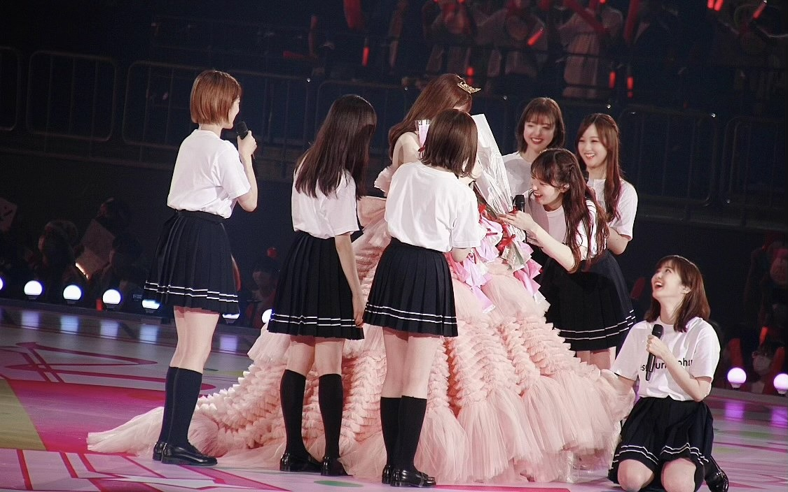
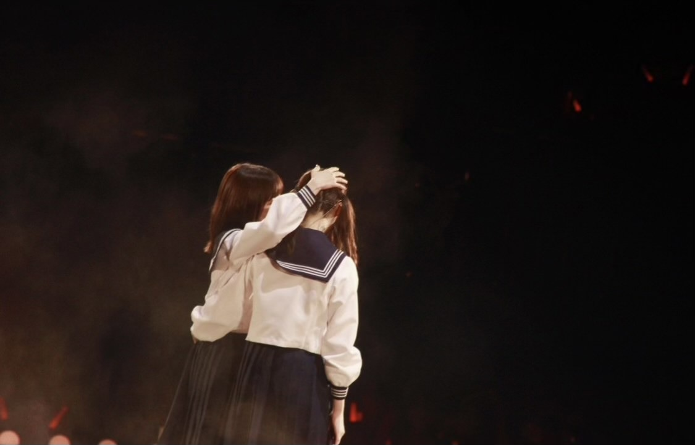

2021/0713Tueありがとうっ(o・・o)
松村沙友理です
本日7月13日をもちまして
乃木坂46を卒業します。
たくさんの応援ありがとうございました。
秋元先生に書いてもらった
さ〜ゆ〜Ready?の歌詞の通り
完全燃焼できました！
みなさんのおかげで
幸せなアイドル人生でした。
乃木坂46の一員であったことを誇りに
さゆりんご頑張ります
これからも応援よろしくお願いします。
自分の思いの丈は
卒業記念写真集の
ロングインタビューと
手書きのメッセージに込めました。
ここでは、言いづらい事も
全部詰め込みました。
手に取って読んでくださる方に
伝わりますように
本当にありがとうございました。
個人のHPも開設しました。
よろしくお願いします！
またお会いできる日を楽しみにしております♡





2021/07/13 23:59
コメント(596)
さゆりちゃん10年間本当にお疲れ様でした！さゆりちゃんがアイドルを続けてくれたからたくさん勇気や笑顔幸せをもらえました。卒業してもずっと応援してます大好きです！
まっちゅん、最後のブログ更新ありがとう！
7/13のSHOWROOMも観てましたよー。
卒業発表のときは凄くショックでしたが
その日から7/13までの事を振り返ると
まっちゅんの卒業は、何だかとても穏やかで優しく優しく迎えた印象でした。
今まで、たくさんのメンバーの卒業を見てきましたが、寂しさはあるけれど 卒業の日、こんなに穏やかな気持ちでいられたのは、まっちゅんのおかげだと思います。
ありがとう
最後の乃木中、録画で今日観れました。
大縄跳び、46回達成おめでとう〜！
感動しました。
大縄跳び成功した後の1期生皆んなの溢れる感情を見ていて、この約10年の想いも含めてのものなんだろうなぁって考えると、一緒に泣きそうになっちゃいました
最後のバナナマンさんとのトークも、心に沁みましたよ〜。
また一緒の現場でお仕事できるといいですね。
......。
まっちゅん、乃木坂での活動お疲れさまでした。
今までありがとう
7/13のSHOWROOMも観てましたよー。
卒業発表のときは凄くショックでしたが
その日から7/13までの事を振り返ると
まっちゅんの卒業は、何だかとても穏やかで優しく優しく迎えた印象でした。
今まで、たくさんのメンバーの卒業を見てきましたが、寂しさはあるけれど 卒業の日、こんなに穏やかな気持ちでいられたのは、まっちゅんのおかげだと思います。
ありがとう
最後の乃木中、録画で今日観れました。
大縄跳び、46回達成おめでとう〜！
感動しました。
大縄跳び成功した後の1期生皆んなの溢れる感情を見ていて、この約10年の想いも含めてのものなんだろうなぁって考えると、一緒に泣きそうになっちゃいました
最後のバナナマンさんとのトークも、心に沁みましたよ〜。
また一緒の現場でお仕事できるといいですね。
......。
まっちゅん、乃木坂での活動お疲れさまでした。
今までありがとう
10年お疲れさまですた 

…ツインテもやめちゃうのかー？
りんごちゃんって呼び方も終わりなのかー？
…ツインテもやめちゃうのかー？
りんごちゃんって呼び方も終わりなのかー？
さゆりんこんばんは。
乃木坂46での10年間のご活躍、本当にお疲れ様でした。
さゆりんと直接お会い出来たのは、京都での握手会の一度だけですが、私の一生の思い出の宝物てす。
個人ホームぺージをアップして頂き、誠にありがとうございます。
ブログもアップして頂けたら嬉しいです！
是非とも宜しくお願い致します。
これからもずっとさゆりんを応援して行きます。
頑張れさゆりん！
乃木坂46での10年間のご活躍、本当にお疲れ様でした。
さゆりんと直接お会い出来たのは、京都での握手会の一度だけですが、私の一生の思い出の宝物てす。
個人ホームぺージをアップして頂き、誠にありがとうございます。
ブログもアップして頂けたら嬉しいです！
是非とも宜しくお願い致します。
これからもずっとさゆりんを応援して行きます。
頑張れさゆりん！
やあ、さゆりん。卒業おめでとう。
10年間お疲れ様でした。完全燃焼出来た？
本当にさゆりんはアイディアの宝庫で。さゆりんご軍団、さゆりんご劇団、あるいは46時間TVのマツミン…その他にも乃木中の色んな企画でさゆりんにしか出来ないようなパフォーマンスを見せてくれてとても面白かったよ。応援させてもらって本当に光栄だったし、大満足だよ。もちろん、卒業してもさゆりんのこと応援し続けるからね。
あと、最後のミーグリでかけてくれた優しい言葉に救われたよ。自分も一生懸命人生楽しもうと思う。さゆりんもこれからの人生目一杯楽しんでね。
さゆりんとの思い出は一生忘れられないよ。10年間ありがとう。そして、これからもどうぞよろしくね。
いつか、軍団が再集結してくれるのを心待ちにしてるよ。
お互いにこれからも頑張っていこうね。またね。＼(^o^)／
10年間お疲れ様でした。完全燃焼出来た？
本当にさゆりんはアイディアの宝庫で。さゆりんご軍団、さゆりんご劇団、あるいは46時間TVのマツミン…その他にも乃木中の色んな企画でさゆりんにしか出来ないようなパフォーマンスを見せてくれてとても面白かったよ。応援させてもらって本当に光栄だったし、大満足だよ。もちろん、卒業してもさゆりんのこと応援し続けるからね。
あと、最後のミーグリでかけてくれた優しい言葉に救われたよ。自分も一生懸命人生楽しもうと思う。さゆりんもこれからの人生目一杯楽しんでね。
さゆりんとの思い出は一生忘れられないよ。10年間ありがとう。そして、これからもどうぞよろしくね。
いつか、軍団が再集結してくれるのを心待ちにしてるよ。
お互いにこれからも頑張っていこうね。またね。＼(^o^)／
まちゅ卒業おめでとう
沢山の幸せをありがとう
まちゅのこれからの人生が幸せで溢れますように
沢山の幸せをありがとう
まちゅのこれからの人生が幸せで溢れますように
松村沙友理さんご卒業おめでとうございます
最後の最後まで沙友理ちゃんの優しさに助けられてしまいました。
沙友理ちゃんにとってはただのファンの一人かもしれないけど、私にとって沙友理ちゃんはとてもとても大きな存在です。
沙友理ちゃんの進む道を応援させていただいてもいいですか？
どんなときも私たちは沙友理ちゃんの味方です。
背負いすぎず沙友理ちゃんのペースで一歩一歩。
10年間乃木坂46でいてくれて本当にありがとう。
沙友理ちゃんは最強のアイドルです。
世界一可愛い！！！
本当にお疲れ様でした。
ゆっくり休んでくださいね
ずーっと大好きです♡
最後の最後まで沙友理ちゃんの優しさに助けられてしまいました。
沙友理ちゃんにとってはただのファンの一人かもしれないけど、私にとって沙友理ちゃんはとてもとても大きな存在です。
沙友理ちゃんの進む道を応援させていただいてもいいですか？
どんなときも私たちは沙友理ちゃんの味方です。
背負いすぎず沙友理ちゃんのペースで一歩一歩。
10年間乃木坂46でいてくれて本当にありがとう。
沙友理ちゃんは最強のアイドルです。
世界一可愛い！！！
本当にお疲れ様でした。
ゆっくり休んでくださいね
ずーっと大好きです♡
まっちゅんは1番笑顔をくれる人でした。まちゅの笑顔にたびたび救われてきました。卒業、知った時はほんとに悲しかった。でもそこからの活動も卒業ライブまでらしさ全開で、ほんとに楽しくていっぱい笑顔をもらいました！
あなたは僕の一生自慢の推しです！超絶可愛いさゆりん！
ほんとにほんとにお疲れ様！これからもずっと応援してます！ありがとう、さゆりんご！！！！！
あなたは僕の一生自慢の推しです！超絶可愛いさゆりん！
ほんとにほんとにお疲れ様！これからもずっと応援してます！ありがとう、さゆりんご！！！！！
大好きなまちゅへ
10年間お疲れ様、ありがとう
乃木坂46に欠かせない存在でまちゅのキュートな笑顔も幸せをくれる元気さも泣きそうになる時、嬉しい時にほっぺに手を支える姿もメンバーと絡む姿もさゆりんごもパンチ設楽の女としてHK3として、さゆりんご軍団、からあげ姉妹、乃木坂の御三家として、全部全部まちゅが大好きだよ！！ 来週から乃木中居ないの寂しいな、次のシングル居ないんだ、色々と考えると寂しい気持ちです。
次の道に進んだまちゅを精一杯応援し続けます
さゆりちゃん頑張れ〜 またさゆりんごパンチみたいな
乃木坂46として最後の最後まで見送れて良かった
さゆりちゃんに出会えて良かった ありがとう！！
10年間お疲れ様、ありがとう
乃木坂46に欠かせない存在でまちゅのキュートな笑顔も幸せをくれる元気さも泣きそうになる時、嬉しい時にほっぺに手を支える姿もメンバーと絡む姿もさゆりんごもパンチ設楽の女としてHK3として、さゆりんご軍団、からあげ姉妹、乃木坂の御三家として、全部全部まちゅが大好きだよ！！ 来週から乃木中居ないの寂しいな、次のシングル居ないんだ、色々と考えると寂しい気持ちです。
次の道に進んだまちゅを精一杯応援し続けます
さゆりちゃん頑張れ〜 またさゆりんごパンチみたいな
乃木坂46として最後の最後まで見送れて良かった
さゆりちゃんに出会えて良かった ありがとう！！
まちゅ！
ずっと笑顔なまちゅが大好きです！
10年間お疲れ様！そしてありがとう！
ずっと笑顔なまちゅが大好きです！
10年間お疲れ様！そしてありがとう！
お疲れ様でした！これからもずっと応援してます！
沙友理ちゃんは最高の女の子だと思っている！
大好き❤
お体に気をつけて、頑張りまっちゅん❣️
写真集ちゃんと朝一で受け取ってきたよ〜！！
ゆっくり読みます。
ほんとうにおつかれさま！！
ゆっくり読みます。
ほんとうにおつかれさま！！
卒業おめでとうございます！！
まちゅの存在にいつも励まされてました！
これからも応援するし、頑張るので一緒にがんばりまっちゅん
さようならは、また会うためのおまじない
まちゅの存在にいつも励まされてました！
これからも応援するし、頑張るので一緒にがんばりまっちゅん
さようならは、また会うためのおまじない
まっちゅん、卒業おめでとう
10年間も乃木坂でがんばってくれてありがとう
これからも大活躍してください、応援しています
まっちゅんのこれからが幸せでありますように
10年間も乃木坂でがんばってくれてありがとう
これからも大活躍してください、応援しています
まっちゅんのこれからが幸せでありますように
10年間本当にお疲れさまでした。
最後まで楽しかったし、幸せでした。ありがとう。
これからも頑張ってください
最後まで楽しかったし、幸せでした。ありがとう。
これからも頑張ってください
白湯りんご10年乃木坂46での活動お疲れ様でした！
見た目がきれい、バラエティー、モデル、映画など様々なジャンルで活躍していて、まさにみんなのとって理想のアイドルだなってすごく思います。
今後も次の道を無理ぜず、自分らしく頑張ってください！
ずっと応援してます！大好き！
乃木坂46の先頭に立って引っ張ってくれてありがとう！
見た目がきれい、バラエティー、モデル、映画など様々なジャンルで活躍していて、まさにみんなのとって理想のアイドルだなってすごく思います。
今後も次の道を無理ぜず、自分らしく頑張ってください！
ずっと応援してます！大好き！
乃木坂46の先頭に立って引っ張ってくれてありがとう！
まちゅ卒業おめでとうございます！
10年間おつかれ様‼️完全燃焼できました？
たくさんの笑顔ありがと〜まちゅが笑顔だとこっちも笑顔になれました、これからも笑顔でがんばってください
これからもずっと松村沙友理を応援してます
10年間おつかれ様‼️完全燃焼できました？
たくさんの笑顔ありがと〜まちゅが笑顔だとこっちも笑顔になれました、これからも笑顔でがんばってください
これからもずっと松村沙友理を応援してます
まっちゅん 卒業おめでとー
最初に握手して、推しとして追いかけた、思い出に残る素敵な10年間だったよ。ありがとー(^o^)／
まちゅやさゆりんご軍団のファンはいい人達が多くて、握手会やライブの時も楽しかったし、行けなかったライブへの祝花にも参加できたしね(^^)d
写真集は今日仕事帰りのコンビニで受けとるから、あらためて感想送るね！ これからの活躍も楽しみだよ
じゃあね(^-^)/
最初に握手して、推しとして追いかけた、思い出に残る素敵な10年間だったよ。ありがとー(^o^)／
まちゅやさゆりんご軍団のファンはいい人達が多くて、握手会やライブの時も楽しかったし、行けなかったライブへの祝花にも参加できたしね(^^)d
写真集は今日仕事帰りのコンビニで受けとるから、あらためて感想送るね！ これからの活躍も楽しみだよ
じゃあね(^-^)/
まちゅさゆりんご
卒業おめでとう
本当に本当に本当に
１０年間ありがとう
すごくさみしいのでテレビにしょっちゅう出てほしい
でも乃木坂からいなくなるのはどうすることもできなく寂しいよ
卒業おめでとう
本当に本当に本当に
１０年間ありがとう
すごくさみしいのでテレビにしょっちゅう出てほしい
でも乃木坂からいなくなるのはどうすることもできなく寂しいよ
これまで10年間お疲れ様でした
良いことだけじゃなく辛いこと、大変なこともたくさんあったと思います。
これからも応援していますありがとうございました
またいつかﾌｧﾝの皆でアップルプリンセス～と叫ぶ事が出きる日が来ますように
良いことだけじゃなく辛いこと、大変なこともたくさんあったと思います。
これからも応援しています
またいつかﾌｧﾝの皆でアップルプリンセス～と叫ぶ事が出きる日が来ますように
まっちゅん、乃木坂46生活お疲れ様でした！
気づいたら、ぐるぐるカーテンで初めてまっちゅんと握手した時のねんれにまっちゅんがなっててびっくりしちゃった。まっちゅんとは、10歳違いなんです。
写真集の手書きコメントで、まっちゅんの思い伝わってきたよ！
あの時、まっちゅんの側にいれてよかった。
これからは直接は会えないけど、テレビとかメディアで松村沙友理を応援してるよ
気づいたら、ぐるぐるカーテンで初めてまっちゅんと握手した時のねんれにまっちゅんがなっててびっくりしちゃった。まっちゅんとは、10歳違いなんです。
写真集の手書きコメントで、まっちゅんの思い伝わってきたよ！
あの時、まっちゅんの側にいれてよかった。
これからは直接は会えないけど、テレビとかメディアで松村沙友理を応援してるよ
10年間お疲れ様でした！！！！
いつも可愛くて面白いまっちゅん、本当に大好きです！
これからも応援してるよ^_^
今まで本当にありがとう。
応援できて幸せでした！！！！
いつも可愛くて面白いまっちゅん、本当に大好きです！
これからも応援してるよ^_^
今まで本当にありがとう。
応援できて幸せでした！！！！
卒業おめでとう！
10年間お疲れ様でした！
これからの活躍、応援してます！
10年間お疲れ様でした！
これからの活躍、応援してます！
いきなりですけど、アイドルには全く興味がありませんでした。
周りがアイドルの話をしたり、アイドルの曲を聴いていても、その場では参加するだけで家に帰れば忘れるくらいの存在でした。
本来なら、アイドルとは無縁の人生を送って居たはずなんです。
けれど、あなたがいました。
あなたが乃木坂46にいました。
何気なく目にして以降、見れば見るほど、惹かれました。
あなたの笑顔、可愛い仕草、声、噛みまくる滑舌、音痴、運動音痴、心配になる食欲、怖くなる言動、全てが私の人生を照らしてくれました。
だから、私もあなたの人生を照らしたい。そう思って今日まで来ました。
直接会う機会はもう無いかもしれません。
グッズを揃えて声援を送る機会はもう無いかもしれません。
けれど、これからもあなたの人生が輝くお手伝いをさせて下さい。
これからの益々のご活躍を祈っています。
乃木坂として最後の夜を一緒に過ごせて幸せでした。
約10年、お疲れ様さまでした。ありがとうございました。
周りがアイドルの話をしたり、アイドルの曲を聴いていても、その場では参加するだけで家に帰れば忘れるくらいの存在でした。
本来なら、アイドルとは無縁の人生を送って居たはずなんです。
けれど、あなたがいました。
あなたが乃木坂46にいました。
何気なく目にして以降、見れば見るほど、惹かれました。
あなたの笑顔、可愛い仕草、声、噛みまくる滑舌、音痴、運動音痴、心配になる食欲、怖くなる言動、全てが私の人生を照らしてくれました。
だから、私もあなたの人生を照らしたい。そう思って今日まで来ました。
直接会う機会はもう無いかもしれません。
グッズを揃えて声援を送る機会はもう無いかもしれません。
けれど、これからもあなたの人生が輝くお手伝いをさせて下さい。
これからの益々のご活躍を祈っています。
乃木坂として最後の夜を一緒に過ごせて幸せでした。
約10年、お疲れ様さまでした。ありがとうございました。
10年間乃木坂46を支えてくれてありがとうおつかれさま
私は沙友理ちゃんから笑顔や元気たくさんの幸せを貰いました
心の底から感謝しかありません
こちらこそありがとう
松村沙友理という素敵な人を応援出来て本当に幸せでした
可愛くてキレイで面白くて才能溢れる沙友理ちゃん
私の永遠の推しで憧れです
これからもずーっとずーっと応援します！大好きまっちゅん
10年間、たくさん頑張ってくれてありがとうございます
さゆりちゃんに出会えてほんとうに幸せで、楽しかったです！
たくさんの笑顔と思い出をありがとうございまっちゅん
これからもたくさん応援します！
だいすきです⸜❤︎⸝
さゆりちゃんに出会えてほんとうに幸せで、楽しかったです！
たくさんの笑顔と思い出をありがとうございまっちゅん
これからもたくさん応援します！
だいすきです⸜❤︎⸝
沙友理ちゃん卒業おめでとう！
そして、10年間ほんっっっっとうにお疲れ様でした。
わたしにとって沙友理ちゃんは小さい頃憧れたお姫様であり、初めて守りたいと思った女の子でした。
優しくて頑張り屋さんでちょっと暗くてでも表情豊かでいっぱい笑って良く食べる沙友理ちゃんが今までもこれからもずっとずっと、だいすきです
アイドルになってくれて、ありがとう。出会ってくれて、ありがとう！
そして、10年間ほんっっっっとうにお疲れ様でした。
わたしにとって沙友理ちゃんは小さい頃憧れたお姫様であり、初めて守りたいと思った女の子でした。
優しくて頑張り屋さんでちょっと暗くてでも表情豊かでいっぱい笑って良く食べる沙友理ちゃんが今までもこれからもずっとずっと、だいすきです
アイドルになってくれて、ありがとう。出会ってくれて、ありがとう！
さゆりんご様、卒業おめでとうございます。
卒業写真集、とても良いですね。1冊目を手に入れて、あと2冊届きます。永久保存します。
ドラマ、拝見しました。きちんと録画して見逃さないようにします。
ホームページ開設ありがとう。時々、訪問させていただきます。
Showroom配信ありがとうございました。嬉しかったです。
イマドキッを、今、聴き終わりました。乃木坂46のが取れても続けてくれるようで、ありがとうございます。
さゆりんごの僕は君に恋をするを聞きたいです。どこかでお願いいたします。
10年間、とても楽しかったです。ありがとうございました。大好きです。これからも応援します。
卒業写真集、とても良いですね。1冊目を手に入れて、あと2冊届きます。永久保存します。
ドラマ、拝見しました。きちんと録画して見逃さないようにします。
ホームページ開設ありがとう。時々、訪問させていただきます。
Showroom配信ありがとうございました。嬉しかったです。
イマドキッを、今、聴き終わりました。乃木坂46のが取れても続けてくれるようで、ありがとうございます。
さゆりんごの僕は君に恋をするを聞きたいです。どこかでお願いいたします。
10年間、とても楽しかったです。ありがとうございました。大好きです。これからも応援します。
まっちゅん卒業おめでとう！
そしてお疲れ様！
まっちゅんは本当に乃木坂の功労者だと思います。
辛い事や悲しい事があった時いつも乃木坂が僕に力をくれました。
僕にとっても乃木坂は人生において無くてはならない存在です！
卒業後の活動も頑張ってください！ずっと応援してます！
そしてお疲れ様！
まっちゅんは本当に乃木坂の功労者だと思います。
辛い事や悲しい事があった時いつも乃木坂が僕に力をくれました。
僕にとっても乃木坂は人生において無くてはならない存在です！
卒業後の活動も頑張ってください！ずっと応援してます！
沙友理ちゃん
こんばんは
乃木坂46ご卒業おめでとうございます
アイドル10年間お疲れ様でした
お忙しい中アイドルとしての最後の時間をSR配信に使ってくれてありがとう
写真集届きました
とても素晴らしいかわいさとドキドキが止まらないような素晴らしい写真集ですね
インタビュー読んで沙友理ちゃんを応援してきて良かったと改めて思いました
本当にありがとうございました
これからもよろしくね
プロミスシンデレラとシンデレラコンプレックス観ました
沙友理ちゃんがめちゃくちゃ可愛かった
シンデレラコンプレックスの方は演技もすごく良かったと思います
来週も楽しみです
イマドキッ
乃木坂46のがなくなった沙友理ちゃん
曲紹介で乃木坂の曲でなく好きな曲をかける沙友理ちゃん
卒業したんですね
これから沙友理ちゃん事を応援していきます
おやすみなさい
こんばんは
乃木坂46ご卒業おめでとうございます
アイドル10年間お疲れ様でした
お忙しい中アイドルとしての最後の時間をSR配信に使ってくれてありがとう
写真集届きました
とても素晴らしいかわいさとドキドキが止まらないような素晴らしい写真集ですね
インタビュー読んで沙友理ちゃんを応援してきて良かったと改めて思いました
本当にありがとうございました
これからもよろしくね
プロミスシンデレラとシンデレラコンプレックス観ました
沙友理ちゃんがめちゃくちゃ可愛かった
シンデレラコンプレックスの方は演技もすごく良かったと思います
来週も楽しみです
イマドキッ
乃木坂46のがなくなった沙友理ちゃん
曲紹介で乃木坂の曲でなく好きな曲をかける沙友理ちゃん
卒業したんですね
これから沙友理ちゃん事を応援していきます
おやすみなさい
私は松村沙友理ちゃんの事が本当に大好きです。
乃木中では、何をするのか予想できなくて、発言の突拍子のなさ、センス、可愛いハートの笑顔、いつみても可愛いまっちゅんを観る事が出来て幸せでした。本当に面白かったです。
沙友里ちゃんは、最後の乃木中で自分に自信がない様な発言をしていたよね。自分を愛する事は、本当に本当に難しいけれど、大好きな周りの人の事を信じてください。ここまでファンのみんなに、メンバーの皆に、周囲の人に愛されている沙友里ちゃんがいるのは、確実に貴方の魅力です。
今まで沢山笑顔でいてくれて、笑顔をくれてありがとう。
10年間のアイドル人生が、沙友里ちゃんにとってこれからの生きる糧になりますように。
乃木中では、何をするのか予想できなくて、発言の突拍子のなさ、センス、可愛いハートの笑顔、いつみても可愛いまっちゅんを観る事が出来て幸せでした。本当に面白かったです。
沙友里ちゃんは、最後の乃木中で自分に自信がない様な発言をしていたよね。自分を愛する事は、本当に本当に難しいけれど、大好きな周りの人の事を信じてください。ここまでファンのみんなに、メンバーの皆に、周囲の人に愛されている沙友里ちゃんがいるのは、確実に貴方の魅力です。
今まで沢山笑顔でいてくれて、笑顔をくれてありがとう。
10年間のアイドル人生が、沙友里ちゃんにとってこれからの生きる糧になりますように。
10年間お疲れさまでした。
結成当時から見てるけど、
まちゅの卒業はまいやんと同じくらい本当に辛い。
まいやんが卒業して心に穴が空いた状態でよく残って頑張ったね。
一時はどうなるかと心配な時期もあったけど、
逃げずに、いつも笑顔でいてくれたね。
屈託のない明るい笑顔。
ちょっとおバカなところ。
後輩思いなところ。
真面目なところ。
そんなまちゅが大好きだよ。
乃木坂を卒業してもずっと見守ってるからね。
これからもまちゅらしく元気で頑張ってね。
今までありがとう！
結成当時から見てるけど、
まちゅの卒業はまいやんと同じくらい本当に辛い。
まいやんが卒業して心に穴が空いた状態でよく残って頑張ったね。
一時はどうなるかと心配な時期もあったけど、
逃げずに、いつも笑顔でいてくれたね。
屈託のない明るい笑顔。
ちょっとおバカなところ。
後輩思いなところ。
真面目なところ。
そんなまちゅが大好きだよ。
乃木坂を卒業してもずっと見守ってるからね。
これからもまちゅらしく元気で頑張ってね。
今までありがとう！
お疲れ様でした！！
これからも頑張ってください！
ずっと応援してます だいすき！！！！！！
これからも頑張ってください！
ずっと応援してます だいすき！！！！！！
あの時、残る方がつらかったと思う
でも残ってくれてありがとう
続けてくれてありがとう
あなたは本当に強い人です
これからも幸せでありますように
ありがとう、まちゅ
でも残ってくれてありがとう
続けてくれてありがとう
あなたは本当に強い人です
これからも幸せでありますように
ありがとう、まちゅ
まっちゅん卒業おめでとう！沢山の幸せと勇気をありがとう！僕も目標に向かって完全燃焼できるよう頑張ります！10年間お疲れ様でした。これからも大好き、ずっと応援してます！松村沙友理さんの幸せを願ってます！本当にありがとうございまっちゅん‼️ ♡
さゆりん卒業おめでとうございます！
これからも辛いことがたくさんあるかもしれませんがさゆりんなら乗り越えられると思っているので頑張ってください！！
陰ながら応援しています！
10年間お疲れ様でした！！！
これからも辛いことがたくさんあるかもしれませんがさゆりんなら乗り越えられると思っているので頑張ってください！！
陰ながら応援しています！
10年間お疲れ様でした！！！
いろいろあったけど、逃げ出さずに悩み考え、アイドル人生を完走したまっちゅんを誇りに思います。10年間お疲れ様でした。
これからはお芝居が中心になるのかな？私はバラエティで馬鹿やってるまっちゅんが好きなので、バラエティにも是非出てください。
お身体に気をつけて、今後もご活躍を期待しています。
これからはお芝居が中心になるのかな？私はバラエティで馬鹿やってるまっちゅんが好きなので、バラエティにも是非出てください。
お身体に気をつけて、今後もご活躍を期待しています。
１０年間お疲れ様でした！
さゆりんを好きになって１０年。
あっと言う間にだったなぁ〜
これからも永遠に神推しです！
これからも応援し続けます！！
ほんとに１０年間お疲れ様でした！
さゆりんを好きになって１０年。
あっと言う間にだったなぁ〜
これからも永遠に神推しです！
これからも応援し続けます！！
ほんとに１０年間お疲れ様でした！
おはこんばんにちわ
チップです。
本当に本当に、
お疲れ様でございました
君のいた乃木坂46は、、、
とっても楽しかったですよ
これからも君の素敵な笑顔に
たくさんの 幸せ が
集まりますように
それではー
チップです。
本当に本当に、
お疲れ様でございました
君のいた乃木坂46は、、、
とっても楽しかったですよ
これからも君の素敵な笑顔に
たくさんの 幸せ が
集まりますように
それではー
松村沙友理さん、ご卒業おめでとうございます。
10年間歩みを止めず前に進み続け、みんなに希望や喜び、楽しさを与え続けてくれて本当にありがとう！
大変なことも沢山あったと思うけど、まっちゅんの明るさや、好きなものに対する熱意、そしてプロデュース能力は天性のものを感じました。
これから先、乃木坂46という大きなグループを旅立ちどのような変化を見せてくれるのか、未来がとても楽しみです。
これからも、お身体にはお気をつけて素敵な人生を歩んで下さい。
お疲れ様！
10年間歩みを止めず前に進み続け、みんなに希望や喜び、楽しさを与え続けてくれて本当にありがとう！
大変なことも沢山あったと思うけど、まっちゅんの明るさや、好きなものに対する熱意、そしてプロデュース能力は天性のものを感じました。
これから先、乃木坂46という大きなグループを旅立ちどのような変化を見せてくれるのか、未来がとても楽しみです。
これからも、お身体にはお気をつけて素敵な人生を歩んで下さい。
お疲れ様！
10年間本当に本当にお疲れ様です！
いっぱいいっぱい笑顔くれてありがと〜〜！
みんなとお話してるまつ。ご飯食べてるまつ。
どんな時もその笑顔はキラキラしてて本当に宇宙1可愛い！！
1回も直接言葉伝えれんやった。
辛い時に出会って励ませんやった。
やけん今からでもこれまでのまつを応援させてください。
もちろんこれからのまつも！！
これからもずっと大好きですよ〜！
ありがとうございまっちゅん！
ありがとう。
いっぱいいっぱい笑顔くれてありがと〜〜！
みんなとお話してるまつ。ご飯食べてるまつ。
どんな時もその笑顔はキラキラしてて本当に宇宙1可愛い！！
1回も直接言葉伝えれんやった。
辛い時に出会って励ませんやった。
やけん今からでもこれまでのまつを応援させてください。
もちろんこれからのまつも！！
これからもずっと大好きですよ〜！
ありがとうございまっちゅん！
ありがとう。
まっちゅん卒業おめでとうございます！
10年間本当にお疲れさまでした！
まっちゅんの笑顔が最高です！これからの大活躍も楽しみに待ってます！ドラマも楽しみ！
写真集も買わせていただいたので、ゆっくり見ます！
身体にはお気をつけて！
またね～
10年間本当にお疲れさまでした！
まっちゅんの笑顔が最高です！これからの大活躍も楽しみに待ってます！ドラマも楽しみ！
写真集も買わせていただいたので、ゆっくり見ます！
身体にはお気をつけて！
またね～
まちゅ、10年間本当にお疲れ様でした。そして、卒業おめでとうございます！
まちゅの明るく元気なところに何度も元気を貰いました！本当にありがとう！
卒業してもこれからもずっと応援します！
身体に気をつけて頑張って下さい！！！
まちゅの明るく元気なところに何度も元気を貰いました！本当にありがとう！
卒業してもこれからもずっと応援します！
身体に気をつけて頑張って下さい！！！
さゆりん卒業おめでとうございます
10年間お疲れ様でした。さゆりんがおる乃木坂を好きになれて良かったです。お疲れ様でした。ずっと大好きです。
10年間お疲れ様でした。さゆりんがおる乃木坂を好きになれて良かったです。お疲れ様でした。ずっと大好きです。
さゆりん卒業おめでとう。
これからも沢山の笑顔を届けてね！
応援してます。
お疲れ様でした。
SHOWROOM配信の時に写真集予約したので、届くの楽しみです♪
では、また何処かで。
松村沙友理に幸あれ★彡
★とし★
これからも沢山の笑顔を届けてね！
応援してます。
お疲れ様でした。
SHOWROOM配信の時に写真集予約したので、届くの楽しみです♪
では、また何処かで。
松村沙友理に幸あれ★彡
★とし★


先ほどのSHOWROOM、拝見していました。
すっかり日付も変わって、1時間以上が経過してしまいました。
今日からは "ただの"松村沙友理 なんですよね。
改めて
10年間、お疲れ様でした。
涙も笑顔も全部ぜんぶ、大切な思い出。
あなたに出会えて良かった。幸せです。
次は、いつ会えるかな？
これから先の未来が素晴らしいものであることを祈り、願っています。
今まで本当にありがとう。
そして、これからもよろしくね。応援しています。
さゆりんご これにて 完全燃焼！
卒業おめでとう。